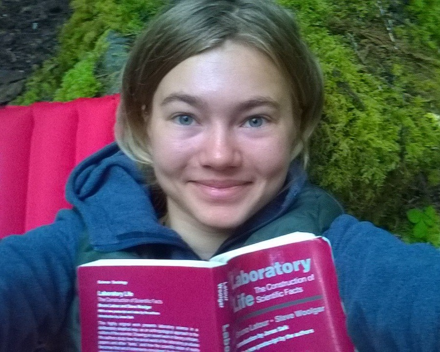

kuksenok /about /now/perfect
Not a "workaholic" so much as a "romantic".
Last Updated: Nov 1, 2016

Camping alone in the Olympic National Park in order to reconsider the Related Work chapter in the dissertation, re-reading Bruno Latour's Laboratory Life. (2015)
11.2016 November is the perfectly cold, wet, dark month to make progress on The Big Work.
"I was moved beyond myself by the force of urgent necessity." — Antoine de Saint Exupery, The Little Prince
10.2016 A long commute is a perfect time to listen to audiobooks, or to witness the unyielding strangeness of humanity.
12.2015 The perfect cup of coffee is the one not used as a performance-enhancing drug, but instead enjoyed in solitude or with good people.